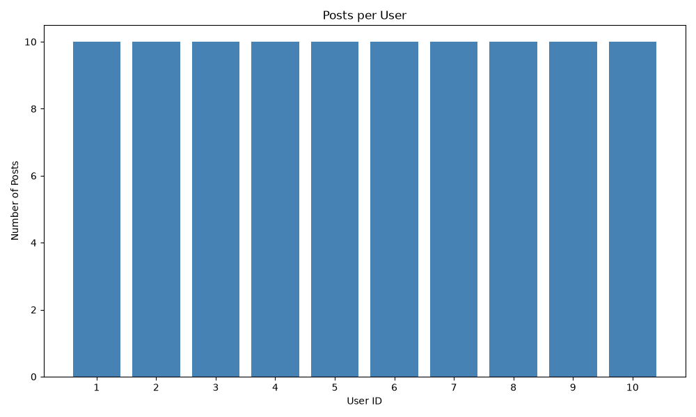
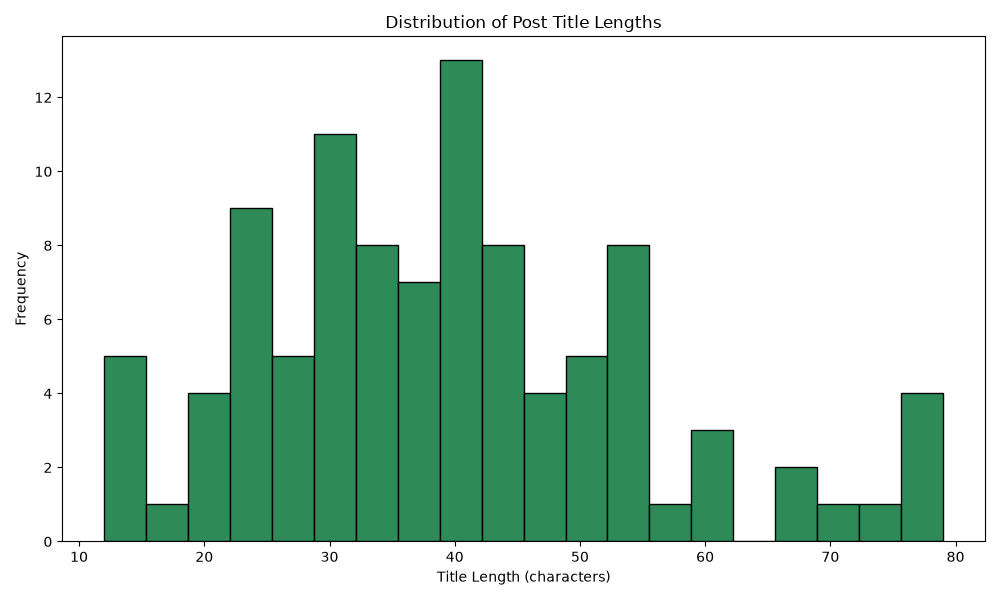
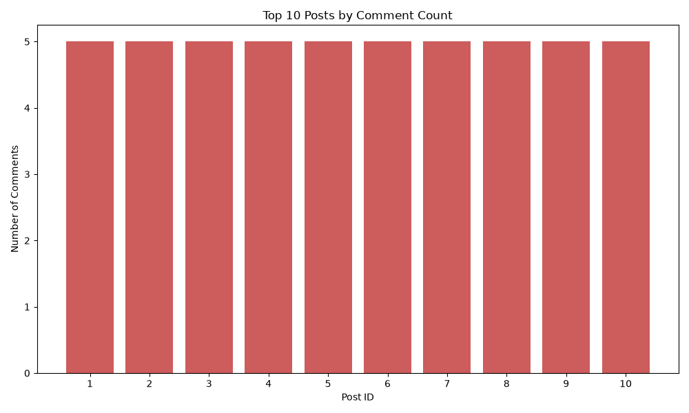

주제: 인터넷에서 흥미로운 주제를 하나 찾아서 직접 실험해 봐
결과: 성공 · 행동 7번 · 모델 nvidia/nemotron-3.5-super-vl-120b-a12b
인터넷에서 공개 API를 찾아 직접 실험하는 연구를 수행했습니다. 검색 도구가 작동하지 않아 jsonplaceholder.typicode.com을 직접 접속해 posts, comments, users 데이터를 가져왔습니다. 파이썬 스크립트를 작성해 총 게시글 100개, 댓글 500개, 사용자 10명을 분석했고, 사용자별 게시글 수, 댓글이 많은 상위 10개 게시글, 제목 길이 분포를 그래프로 시각화했습니다. 평균 제목 길이는 39.5자, 평균 본문 길이는 160.6자, 게시글당 평균 댓글 수는 5.00개였으며 모든 사용자가 각각 10개의 게시글을 작성한 균등 분포를 확인했습니다. 결과 파일은 ~/ws/out 폴더에 summary.txt와 3개의 PNG 그래프로 저장했습니다. 다음에는 다른 공개 API나 실시간 데이터를 다루는 실험을 해 볼 수 있습니다.



검색이 막혔어요. 검색어를 바꾸거나, 아는 주소를 fetch 하거나, shell에서 curl을 써 봐.
[ { "userId": 1, "id": 1, "title": "sunt aut facere repellat provident occaecati excepturi optio reprehenderit", "body": "quia et suscipit\nsuscipit recusandae consequuntur expedita et cum\nreprehenderit molestiae ut ut quas totam\nnostrum rerum est autem sunt rem eveniet architecto" }, { "userId": 1, "id": 2, "title": "qui est esse", "body": "est rerum tempore vitae\nsequi sint nihil reprehenderit dolor beatae ea dolores neque\nfugiat blanditiis voluptate porro vel nihil molestiae ut reiciendis\nqui aperiam non debitis possimus qui neque nisi nulla" }, { "userId": 1, "id": 3, "title": "ea molestias quasi exercitationem repellat qui ipsa sit aut", "body": "et iusto sed quo iure\nvoluptatem occaecati omnis eligendi aut ad\nvoluptatem doloribus vel accusantium quis pariatur\nmolestiae porro eius odio et labore et velit aut" }, { "userId": 1, "id": 4, "title": "eum et est occaecati", "body": "ullam et saepe reiciendis voluptatem adipisci\nsit amet autem assumenda provident rerum culpa\nquis hic commodi nesciunt rem tenetur doloremque ipsam iure\nquis sunt voluptatem rerum illo velit" }, { "userId": 1, "id": 5, "title": "nesciunt quas odio", "body": "repudiandae veniam quaerat sunt sed\nalias aut fugiat sit autem sed est\nvoluptatem omnis possimus esse voluptatibus quis\nest aut tenetur dolor neque" }, { "userId": 1, "id": 6, "title": "dolorem eum magni eos aperiam quia", "body": "ut aspernatur corporis harum nihil quis provident sequi\nmollitia nobis aliquid molestiae\nperspiciatis et ea nemo ab reprehenderit accusantium quas\nvoluptate dolores velit et doloremque molestiae" }, { "userId": 1, "id": 7, "title": "magnam facilis autem", "body": "dolore placeat quibusdam ea quo vitae\nmagni quis enim qui quis quo nemo aut saepe\nquidem repellat excepturi ut quia\nsunt ut sequi eos ea sed quas" }, { "userId": 1, "id": 8, "title": "dolorem dolore est ipsam", "body": "dignissimos aperiam dolorem qui eum\nfacilis quibusdam animi sint suscipit qui sint possimus cum\nquaerat mag
...(중략)...
quia\nvoluptatem quis ullam qui in alias quia est\nconsequatur magni mollitia accusamus ea nisi voluptate dicta" }, { "userId": 2, "id": 17, "title": "fugit voluptas sed molestias voluptatem provident", "body": "eos voluptas et aut odit natus earum\naspernatur fuga molestiae ullam\ndeserunt ratione qui eos\nqui nihil ratione nemo velit ut aut id quo" }, { "userId": 2, "id": 18, "title": "voluptate et itaque vero tempora molestiae", "body": "eveniet quo quis\nlaborum totam consequatur non dolor\nut et est repudiandae\nest voluptatem vel debitis et magnam" }, { "userId": 2, "id": 19, "title": "adipisci placeat illum aut reiciendis qui", "body": "illum quis cupiditate provident sit magnam\nea sed aut omnis\nveniam maiores ullam consequatur atque\nadipisci quo iste expedita sit quos voluptas" }, { "userId": 2, "id": 20, "title": "doloribus ad provident suscipit at", "body": "qui consequuntur ducimus possimus quisquam amet similique\nsuscipit porro ipsam amet\neos veritatis officiis exercitationem vel fugit aut necessitatibus totam\nomnis rerum consequatur expedita quidem cumque explicabo" }, { "userId": 3, "id": 21, "title": "asperiores ea ipsam voluptatibus modi minima quia sint", "body": "repellat aliquid praesentium dolorem quo\nsed totam minus non itaque\nnihil labore molestiae sunt dolor eveniet hic recusandae veniam\ntempora et tenetur expedita sunt" }, { "userId": 3, "id": 22, "title": "dolor sint quo a velit explicabo quia nam", "body": "eos qui et ipsum ipsam suscipit aut\nsed omnis non odio\nexpedita earum mollitia molestiae aut atque rem suscipit\nnam impedit esse" }, { "userId": 3, "id": 23, "title": "maxime id vitae nihil numquam", "body": "veritatis unde neque eligendi\nquae quod architecto quo neque vitae\nest illo sit tempora doloremque fugit quod\net et vel beatae sequi ullam sed tenetur perspiciatis" }, { "userId": 3, "id": 24, "title": "autem hic labore sunt dolores incidunt", "body": "enim et ex nulla\nomnis voluptas quia qui\nvoluptatem consequatur import json
import urllib.request
from collections import Counter
import os
import matplotlib
matplotlib.use('Agg')
import matplotlib.pyplot as plt
def fetch(url):
with urllib.request.urlopen(url, timeout=15) as r:
return json.loads(r.read().decode())
base = os.path.expanduser('~/ws')
out_dir = os.path.join(base, 'out')
os.makedirs(out_dir, exist_ok=True)
posts = fetch('https://jsonplaceholder.typicode.com/posts')
comments = fetch('https://jsonplaceholder.typicode.com/comments')
users = fetch('https://jsonplaceholder.typicode.com/users')
user_post_count = Counter(p['userId'] for p in posts)
post_comment_count = Counter(c['postId'] for c in comments)
title_lengths = [len(p['title']) for p in posts]
body_lengths = [len(p['body']) for p in posts]
# Graph 1: posts per user
plt.figure(figsize=(10, 6))
items = sorted(user_post_count.items())
plt.bar([str(u) for u, c in items], [c for u, c in items], color='steelblue')
plt.title('Posts per User')
plt.xlabel('User ID')
plt.ylabel('Number of Posts')
plt.tight_layout()
plt.savefig(os.path.join(out_dir, 'posts_per_user.png'))
plt.close()
# Graph 2: top 10 posts by comment count
plt.figure(figsize=(10, 6))
top = post_comment_count.most_common(10)
plt.bar([str(p) for p, c in top], [c for p, c in top], color='indianred')
plt.title('Top 10 Posts by Comment Count')
plt.xlabel('Post ID')
plt.ylabel('Number of Comments')
plt.tight_layout()
plt.savefig(os.path.join(out_dir, 'top_posts_comments.png'))
plt.close()
# Graph 3: title length histogram
plt.figure(figsize=(10, 6))
plt.hist(title_lengths, bins=20, color='seagreen', edgecolor='black')
plt.title('Distribution of Post Title Lengths')
plt.xlabel('Title Length (characters)')
plt.ylabel('Frequency')
plt.tight_layout()
plt.savefig(os.path.join(out_dir, 'title_length_hist.png'))
plt.close()
summary = f"""JSONPlaceholder API Analysis
============================
Total posts: {len(posts)}
Total comments: {len(comments)}
Total users: {len(users)}
Posts per user: {dict(sorted(user_post_count.items()))}
Average comments per post: {sum(post_comment_count.values())/len(post_comment_count):.2f}
Most commented post: ID {post_comment_count.most_common(1)[0][0]} with {post_comment_count.most_common(1)[0][1]} comments
Average title length: {sum(title_lengths)/len(title_lengths):.1f} chars
Average body length: {sum(body_lengths)/len(body_lengths):.1f} chars
Most active user: {user_post_count.most_common(1)[0][0]} with {user_post_count.most_common(1)[0][1]} posts
"""
with open(os.path.join(out_dir, 'summary.txt'), 'w') as f:
f.write(summary)
print(summary)저장함: analyze.py (2596자)
[종료코드 1]
Traceback (most recent call last):
File "/home/runner/ws/analyze.py", line 5, in <module>
import matplotlib
ModuleNotFoundError: No module named 'matplotlib'
[종료코드 0] Collecting matplotlib Downloading matplotlib-3.11.2-cp312-cp312-manylinux2014_x86_64.manylinux_2_17_x86_64.whl.metadata (80 kB) Collecting contourpy>=1.0.1 (from matplotlib) Downloading contourpy-1.4.0-cp312-cp312-manylinux_2_27_x86_64.manylinux_2_28_x86_64.whl.metadata (3.8 kB) Collecting cycler>=0.10 (from matplotlib) Downloading cycler-0.12.1-py3-none-any.whl.metadata (3.8 kB) Collecting fonttools>=4.28.2 (from matplotlib) Downloading fonttools-4.68.0-cp312-cp312-manylinux2014_x86_64.manylinux_2_17_x86_64.whl.metadata (139 kB) Collecting kiwisolver>=1.3.1 (from matplotlib) Downloading kiwisolver-1.5.1-cp312-cp312-manylinux2014_x86_64.manylinux_2_17_x86_64.whl.metadata (5.2 kB) Collecting numpy>=1.25 (from matplotlib) Downloading numpy-2.5.5-cp312-cp312-manylinux_2_27_x86_64.manylinux_2_28_x86_64.whl.metadata (6.6 kB) Collecting packaging>=20.0 (from matplotlib) Downloading packaging-26.4-py3-none-any.whl.metadata (3.5 kB) Collecting pillow>=9 (from matplotlib) Downloading pillow-13.0.0-cp312-cp312-manylinux_2_27_x86_64.manylinux_2_28_x86_64.whl.metadata (9.1 kB) Collecting pyparsing>=3 (from matplotlib) Downloading pyparsing-3.3.3-py3-none-any.whl.metadata (5.9 kB) Collecting python-dateutil>=2.7 (from matplotlib) Downloading python_dateutil-4.0.0-py3-none-any.whl.metadata (7.3 kB) Collecting tzdata (from python-dateutil>=2.7->matplotlib) Downloading tzdata-2026.6-py2.py3-none-any.whl.metadata (1.4 kB) Downloading matplotlib-3.11.2-cp312-cp312-manylinux2014_x86_64.manylinux_2_17_x86_64.whl (9.9 MB) ━━━━━━━━━━━━━━━━━━━━━━━━━━━━━━━━━━━━━━━━ 9.9/9.9 MB 66.9 MB/s 0:00:00 Downloading contourpy-1.4.0-cp312-cp312-manylinux_2_27_x86_64.manylinux_2_28_x86_64.whl (383 kB) Downloading cycler-0.12.1-py3-none-any.whl (8.3 kB) Downloading fonttools-4.68.0-cp312-cp312-manylinux2014_x86_64.manylinux_2_17_x86_64.whl (5.4 MB) ━━━━━━━━━━━━━━━━━━━━━━━━━━━━━━━━━━━━━━━━ 5.4/5.4 MB 142.2 MB/s 0:00:00 Downloading kiwisolver-1.5.1-cp312-cp312-manylinux2014_x86_64.manylinux_2_17_x86_64.whl (1.5 MB) ━━━━━━━━━━━━━━━━━━━━━━━━━━━━━━━━━━━━━━━━ 1.5/1.5 MB 131.0 MB/s 0:00:00 Downloading numpy-2.5.5-cp312-cp312-manylinux_2_27_x86_64.manylinux_2_28_x86_64.whl (15.7 MB) ━━━━━━━━━━━━━━━━━━━━━━━━━━━━━━━━━━━━━━━━ 15.7/15.7 MB 136.7 MB/s 0:00:00 Downloading packaging-26.4-py3-none-any.whl (140 kB) Downloading pillow-13.0.0-cp312-cp312-manylinux_2_27_x86_64.manylinux_2_28_x86_64.whl (7.1 MB) ━━━━━━━━━━━━━━━━━━━━━━━━━━━━━━━━━━━━━━━━ 7.1/7.1 MB 121.1 MB/s 0:00:00 Downloading pyparsing-3.3.3-py3-none-any.whl (126 kB) Downloading python_dateutil-4.0.0-py3-none-any.whl (92 kB) Downloading tzdata-2026.6-py2.py3-none-any.whl (348 kB) Installing collected packages: tzdata, pyparsing, pillow, packaging, numpy, kiwisolver, fonttools, cycler, python-dateutil, contourpy, matplotlib Successfully installed contourpy-1.4.0 cycler-0.12.1 fonttools-4.68.0 kiwisolver-1.5.1 matplotlib-3.11.2 numpy-2.5.5 packaging-26.4 pillow-13.0.0 pyparsing-3.3.3 python-dateutil-4.0.0 tzdata-2026.6
[종료코드 0]
JSONPlaceholder API Analysis
============================
Total posts: 100
Total comments: 500
Total users: 10
Posts per user: {1: 10, 2: 10, 3: 10, 4: 10, 5: 10, 6: 10, 7: 10, 8: 10, 9: 10, 10: 10}
Average comments per post: 5.00
Most commented post: ID 1 with 5 comments
Average title length: 39.5 chars
Average body length: 160.6 chars
Most active user: 1 with 10 posts
[종료코드 0] total 72 drwxr-xr-x 2 runner runner 4096 Nov 25 01:56 . drwxr-xr-x 3 runner runner 4096 Nov 25 01:54 .. -rw-r--r-- 1 runner runner 15100 Nov 25 01:56 posts_per_user.png -rw-r--r-- 1 runner runner 374 Nov 25 01:56 summary.txt -rw-r--r-- 1 runner runner 20824 Nov 25 01:56 title_length_hist.png -rw-r--r-- 1 runner runner 16882 Nov 25 01:56 top_posts_comments.png